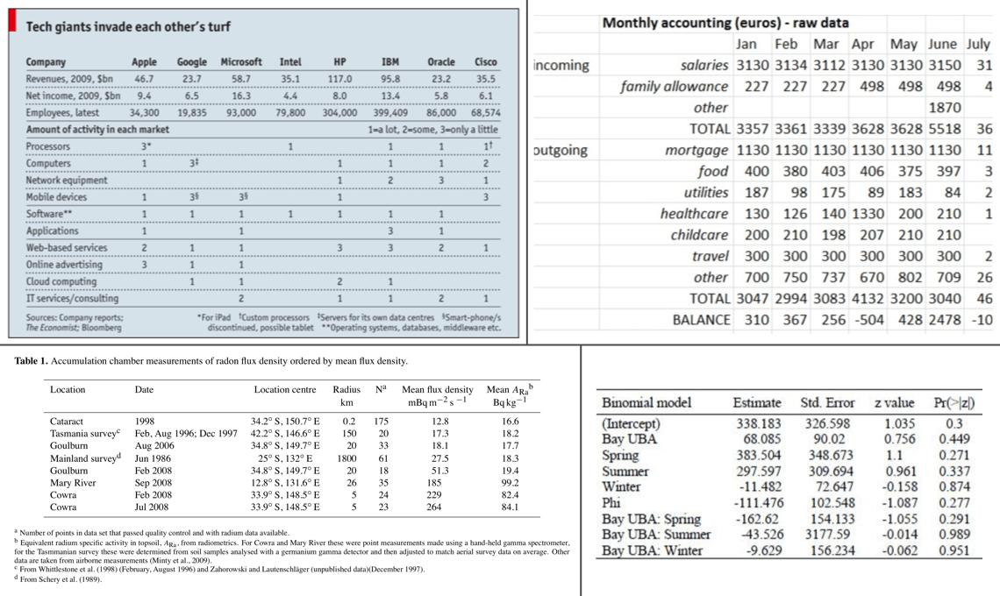
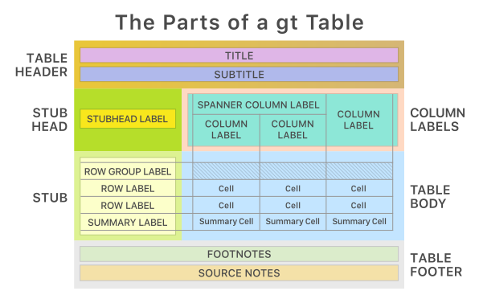

from great_tables import GT, md, html
from great_tables.data import islands
islands_mini = islands.head(10)Introduction
The Great Tables package is all about making it simple to produce nice-looking display tables. Display tables? Well yes, we are trying to distinguish between data tables (i.e., DataFrames) and those tables you’d find in a web page, a journal article, or in a magazine. Such tables can likewise be called presentation tables, summary tables, or just tables really. Here are some examples, ripped straight from the web:

We can think of display tables as output only, where we’d not want to use them as input ever again. Other features include annotations, table element styling, and text transformations that serve to communicate the subject matter more clearly.
Let’s Install
The installation really couldn’t be much easier. Use this:
pip install great_tablesA Basic Table using Great Tables
Note
The example below requires the Pandas library to be installed. But Pandas is not required to use Great Tables. You can also use a Polars DataFrame.
Let’s use a subset of the islands dataset available within great_tables.data:
The islands data is a simple Pandas DataFrame with 2 columns and that’ll serve as a great start. Speaking of which, the main entry point into the Great Tables API is the GT class. Let’s use that to make a presentable table:
# Create a display table showing ten of the largest islands in the world
gt_tbl = GT(islands_mini)
# Show the output table
gt_tbl| name | size |
|---|---|
| Africa | 11506 |
| Antarctica | 5500 |
| Asia | 16988 |
| Australia | 2968 |
| Axel Heiberg | 16 |
| Baffin | 184 |
| Banks | 23 |
| Borneo | 280 |
| Britain | 84 |
| Celebes | 73 |
That doesn’t look too bad! Sure, it’s basic but we really didn’t really ask for much. We did receive a proper table with column labels and the data. Oftentimes however, you’ll want a bit more: a Table header, a Stub, and sometimes source notes in the Table Footer component.
Note
Typically we use Great Tables in an notebook environment or within a Quarto document. Tables won’t print to the console, but using the show() method on a table object while in the console will open the HTML table in your default browser.
Polars DataFrame support
GT accepts both Pandas and Polars DataFrames. You can pass a Polars DataFrame to GT, or use its DataFrame.style property.
import polars as pl
df_polars = pl.from_pandas(islands_mini)
# Approach 1: call GT ----
GT(df_polars)
# Approach 2: Polars style property ----
df_polars.style| name | size |
|---|---|
| Africa | 11506 |
| Antarctica | 5500 |
| Asia | 16988 |
| Australia | 2968 |
| Axel Heiberg | 16 |
| Baffin | 184 |
| Banks | 23 |
| Borneo | 280 |
| Britain | 84 |
| Celebes | 73 |
Some Beautiful Examples
In the following pages we’ll use Great Tables to turn DataFrames into beautiful tables, like the ones below.
Show the Code
from great_tables import GT, md, html
from great_tables.data import islands
islands_mini = islands.head(10)
(
GT(islands_mini, rowname_col = "name")
.tab_header(
title="Large Landmasses of the World",
subtitle="The top ten largest are presented"
)
.tab_source_note(
source_note="Source: The World Almanac and Book of Facts, 1975, page 406."
)
.tab_source_note(
source_note=md("Reference: McNeil, D. R. (1977) *Interactive Data Analysis*. Wiley.")
)
.tab_stubhead(label="landmass")
)| Large Landmasses of the World | |
| The top ten largest are presented | |
| landmass | size |
|---|---|
| Africa | 11506 |
| Antarctica | 5500 |
| Asia | 16988 |
| Australia | 2968 |
| Axel Heiberg | 16 |
| Baffin | 184 |
| Banks | 23 |
| Borneo | 280 |
| Britain | 84 |
| Celebes | 73 |
| Source: The World Almanac and Book of Facts, 1975, page 406. | |
| Reference: McNeil, D. R. (1977) Interactive Data Analysis. Wiley. | |
Show the Code
from great_tables import GT, html
from great_tables.data import airquality
airquality_m = airquality.head(10).assign(Year=1973)
gt_airquality = (
GT(airquality_m)
.tab_header(
title="New York Air Quality Measurements",
subtitle="Daily measurements in New York City (May 1-10, 1973)",
)
.tab_spanner(label="Time", columns=["Year", "Month", "Day"])
.tab_spanner(label="Measurement", columns=["Ozone", "Solar_R", "Wind", "Temp"])
.cols_move_to_start(columns=["Year", "Month", "Day"])
.cols_label(
Ozone=html("Ozone,<br>ppbV"),
Solar_R=html("Solar R.,<br>cal/m<sup>2</sup>"),
Wind=html("Wind,<br>mph"),
Temp=html("Temp,<br>°F"),
)
)
gt_airquality| New York Air Quality Measurements | ||||||
| Daily measurements in New York City (May 1-10, 1973) | ||||||
| Time | Measurement | |||||
|---|---|---|---|---|---|---|
| Year | Month | Day | Ozone, ppbV |
Solar R., cal/m2 |
Wind, mph |
Temp, °F |
| 1973 | 5 | 1 | 41.0 | 190.0 | 7.4 | 67 |
| 1973 | 5 | 2 | 36.0 | 118.0 | 8.0 | 72 |
| 1973 | 5 | 3 | 12.0 | 149.0 | 12.6 | 74 |
| 1973 | 5 | 4 | 18.0 | 313.0 | 11.5 | 62 |
| 1973 | 5 | 5 | 14.3 | 56 | ||
| 1973 | 5 | 6 | 28.0 | 14.9 | 66 | |
| 1973 | 5 | 7 | 23.0 | 299.0 | 8.6 | 65 |
| 1973 | 5 | 8 | 19.0 | 99.0 | 13.8 | 59 |
| 1973 | 5 | 9 | 8.0 | 19.0 | 20.1 | 61 |
| 1973 | 5 | 10 | 194.0 | 8.6 | 69 | |
These examples show just a glimpse of what’s possible with Great Tables. The rest of this User Guide will walk you through each capability in detail, from structuring your table with headers, stubs, and column labels, to formatting values, adding visual styles, and embedding nanoplots directly in your cells.
The Anatomy of a Table
Every table produced by Great Tables is composed of a set of structural components. Understanding these components and how they relate to each other is key to building effective presentation tables.
The Great Tables package makes it relatively easy to add components so that the resulting output table better conveys the information you want to present. These table components work well together and the possible variations in arrangement can handle even the most demanding table presentation needs. The previous output table we showed had only two components: the Column Labels and the Table Body. The next few examples will show all of the other table parts that are available.
This is the way the main parts of a table (and their subparts) fit together:

The following list describes each major component of a Great Tables output, ordered from top to bottom:
- the Table Header (optional; with a title and possibly a subtitle)
- the Stub and the Stub Head (optional; contains row labels, optionally within row groups having row group labels)
- the Column Labels (contains column labels, optionally under spanner labels)
- the Table Body (contains columns and rows of cells)
- the Table Footer (optional; possibly with one or more source notes)
Each of these parts is covered in detail throughout the rest of this User Guide. The pages that follow will show you how to add a header and footer, create a stub with row labels and groupings, organize your column labels with spanners, format cell values, and apply styling to any part of the table.